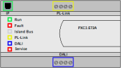

PXC3 properties
The listed properties are displayed in the Hardware and network editor > Inspector window > Properties tab when the automation station is selected in the Device view tab.

General
Property | Description | Default value |
|---|---|---|
Name | Name is a text field to enter the name of the automation station. The name is displayed in the project tree. | Depends on other settings. |
Comment | Text field for any helpful information on the automation station. | - |
Order number | Device type. Read only. | Depends on the device type. |
Device width | Width of the automation station on the rail. Read only. Unit: [mm] | 160 |
Rail | Rail where the automation station is located. Read only. | Depends on other settings. |
Automation station | Name of the automation station. Read only. | Depends on other settings. |
Power supply (TX rail) | Power available from the internal power supply of the TX rail. The value is not updated. See also Power remaining in TX rail properties Unit: [mA] | 600 |
Power supply (KNX rail) | Power available from the internal power supply of the KNX rail. The value is not updated. See also Power remaining in KNX rail properties Unit: [mA] | 160 |
Catalog information
Property | Description | Default value |
|---|---|---|
Short designation | Short description of the designation of the automation station. Read only. | Depends on the device type. |
Order number | Device type. Read only. | Depends on the device type. |
Version | Version of the offline engineered program for the automation station. Read only. | Depends on other settings. |
Application architecture | Version of the application architecture. Read only. | Depends on other settings. |
Description | Description of the automation station. Read only. | Depends on the device type. |
Application type information
The properties described in the table below are only supported in Desigo V6.0 and higher.
Property | Description | Default value |
|---|---|---|
| Use this automation station to develop an application type defines if the automation station can be used to create a project specific application type or not. Note
|
|
Application type information | ||
Application type | Application type is a text field to enter the name of the application type. | - |
Description | Description is a text field to enter a description of the application type. |
|
Owner | Text field to enter the name of the author or the origin of the application type e. g. headquarters, regional company, project. | - |
Version | Version is a field to enter the version of the application type. Format: mmm.rrr | - |
Dependency tags | Dependency tags is a text field to enter dependency tags that are specific for the type of the automations station. The dependency tags are used in the configurator of ABT Site to hide features that are not compatible with the automation station. | - |
Identifier | The identifier is a calculated value. Read only. | - |
Last compiled | Last compiled shows the timestamp of the last successful compilation of the application type. Read only. | Not compiled |
File name | File name shows the name of the file that is created when the application type is packed. Read only. | - |
Apogee integration | ||
| Defines if an application number can be specified and included in the application type.
|
|
Application number | Field to enter the Application number. Application number is only enabled if Include Apogee application number is enabled. | 0 |
 Use this automation station to develop an application type
Use this automation station to develop an application type : Enables the data fields for application type information.
: Enables the data fields for application type information. : Disables the data fields for application type information.
: Disables the data fields for application type information.
Unit conversion
The properties described in the table below are only supported in Desigo V6.0 and higher.
Property text | Description | Default value |
|---|---|---|
System of units | Shows the system of units used by the room automation station. Defined in the ABT project. Read only. | Depends on the region of the automation station. |
TX address assignment
Property | Description |
|---|---|
Assign addresses to module | Applies addresses to the TX-I/O modules according to their order on the TX rail(s). |
TX device types
Property | Description |
|---|---|
Apply parameters
| Assigns signal parameters of hardwired I/Os of the automation station to all I/Os with the same field device type. Transfer I/O parameters |

BACnet/IP Interface
If the IP interface symbol on the automation station is selected in the Device view, only BACnet/IP Interface properties are displayed.
IP settings
Property | Description | Default |
|---|---|---|
Host name | The host name can contain the letters A through Z (not case-sensitive), digits 0 through 9, and a hyphen (-). | - |
| Defines if DHCP (Dynamic Host Configuration Protocol) is used to automatically configure the device port.
|
|
| Defines if a fixed IP address can be used.
|
|
IP address | IP address defines the IP address assigned to the port of the automation station. The IP address has to be unique within the network. | 0.0.0.0 |
Subnet mask | Subnet mask defines the subnet within a larger network. The setting for the subnet mask needs to correspond to the settings in ABT Site > Projects > Settings. | 255.255.255.0 |
Default gateway | Default gateway defines a node on a TCP/IP network, that serves as an access point to another network. The setting for the default gateway needs to correspond to the settings in ABT Site > Projects > Settings. | 0.0.0.0 |
DNS server 1 | DNS server 1 defines the address of the first DNS (Domain Name System) server. The address needs to correspond to the address defined in ABT Site > Projects > Settings. | 0.0.0.0 |
DNS server 2 | DNS server 2 defines the address of the first DNS (Domain Name System) server. The address needs to correspond to the address defined in ABT Site > Projects > Settings. | 0.0.0.0 |
Domain | Domain defines the hostname that identifies the BACnet/IP port resources. The domain needs to correspond to the domain defined in ABT Site > Projects > Settings. | - |
 DHCP
DHCP : Fixed IP is enabled.
: Fixed IP is enabled.BACnet settings
Property text | Description | Default value |
|---|---|---|
Device name | Name is a text field to enter the name of the automation station. The name is displayed in the project tree. | The default value depends on ABT project settings. |
Device instance number | Device instance number is assigned automatically but can be changed manually. It has to be unique within the network. Note: If you change the value manually, there is no check if the number is already used or will be used by automatic assigning within a range. | The default value depends on ABT project settings. |
Serial number | The device serial number that is associated with the BA Device object. Serial number is assigned during installation and commissioning. | ∼ |
UDP port [Hex] | UPD port [Hex] defines the UDP port used for communication in the hexadecimal format. Use the UDP port specified in ABT Site > Projects > Settings. Only devices with the same UDP port can communicate.
|
|
APDU retries | APDU retries defines how many times the automation station tries to send an APDU. Range: 0...10 | 3 |
APDU timeout [mm:ss:ms] | APDU timeout [mm:ss:ms] defines the time before the automation station will resend an APDU if the APDU is not acknowledged by the receiver. Range: 00:01:000...00:12:000 [min:ss:ms] | 00:03:000 (IP) |
Max APDU length | Max APDU length defines the maximum length of the APDU.
|
|
Time zone | Defines the time zone assigned to the BACnet device. This value can be changed by using the drop-down menu of time zone choices. Setting the time zone for automation stations |
|
Network number | Network number defines the network the automation station belongs to. The network number needs to correspond to the network number in ABT Site > Projects > Settings. Range: 1...65534 7000: Communication is set to local. The automation station cannot communicate over the network. | 1 |
Description | Text field to enter a description of the network. |
|
 BAC0...BAD4
BAC0...BAD4SSL settings
NOTICE

Unprotected physical network access (HTTP) opens the possibility to interrupt or hijack communication. Unauthorized access to customer sites may result in system malfunctions or automation stations failures.
High fixing costs and a loss of reputation.
- Do not allow http connections. Only use secure connections (https).
Property text | Description | Default value |
|---|---|---|
Allow HTTP connection | Allow HTTP connection defines if an automation station can be accessed over an HTTP connection.
|
|
Web server
The web server properties are used for operating and monitoring settings of QMX7 devices. The web server properties are only available for Desigo V5.1SP. In Desigo V6.0 the properties can be configured in ABT Site > Projects > Settings > User profiles > User settings and ABT Site > Projects > Settings > User profiles > Common settings.
NOTICE
Communication interruption due to inadequate parameterization of priorities
Inadequate parameterization of the priorities in the web server settings may cause communication interruption of different room operator units.
- Make sure changes of priorities are done only by experts.
Property | Description | Default value |
|---|---|---|
Language for menus | A set of various languages is available for the settings menus of the web client. |
|
Time format | Time format in the status bar.
|
|
Date format | Date format in the status bar.
|
|
Screen saver timeout | Timeout when the screen saver is activated. Range: 5, 10, 15, 30, 45 or 60 min | 15 min |
Navigation bar timeout | Timeout when the first page is reactivated after inactivity. Only meaningful if more than one page is used. Range: Off, 5, 10, 15, 30, 45 or 60 min | 30 min |
Room operator unit priority | Priority with which a room user operates and monitors a room. Range: | 13 |
 7…16
7…16Properties of Rails
For specific properties of rails see TX rail properties, KNX rail properties, and DALI rail properties.